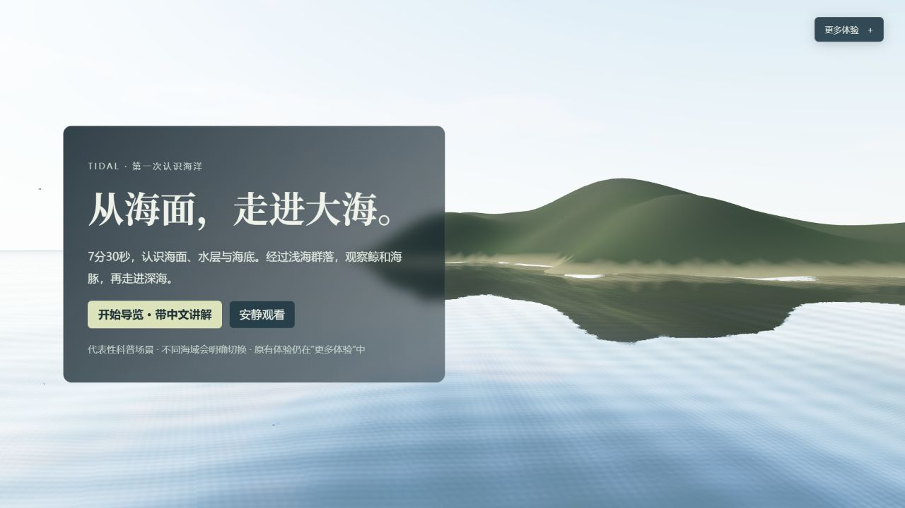
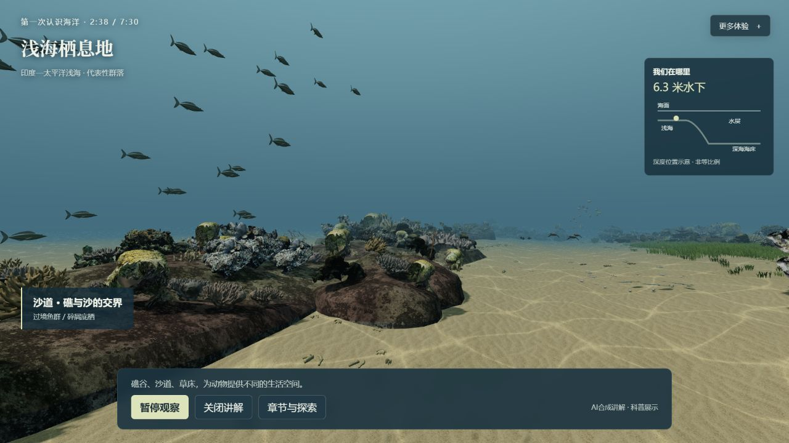
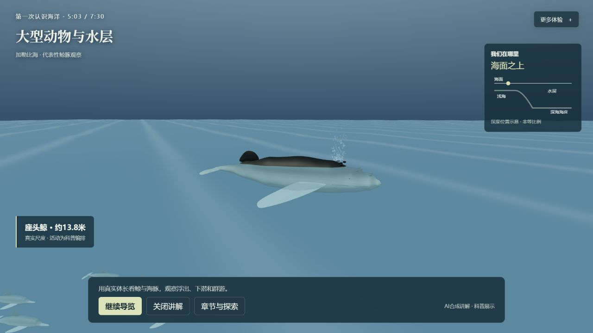
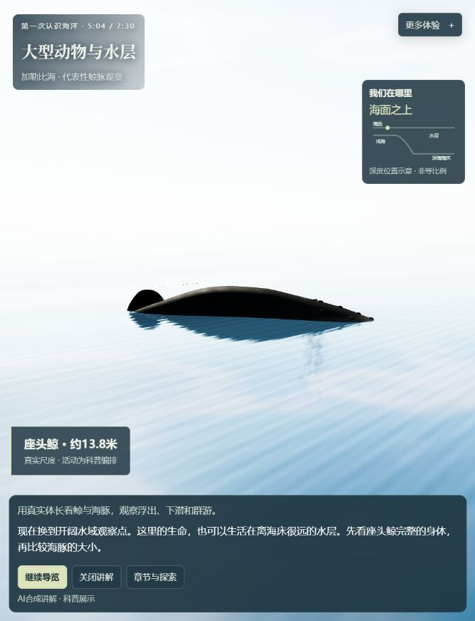
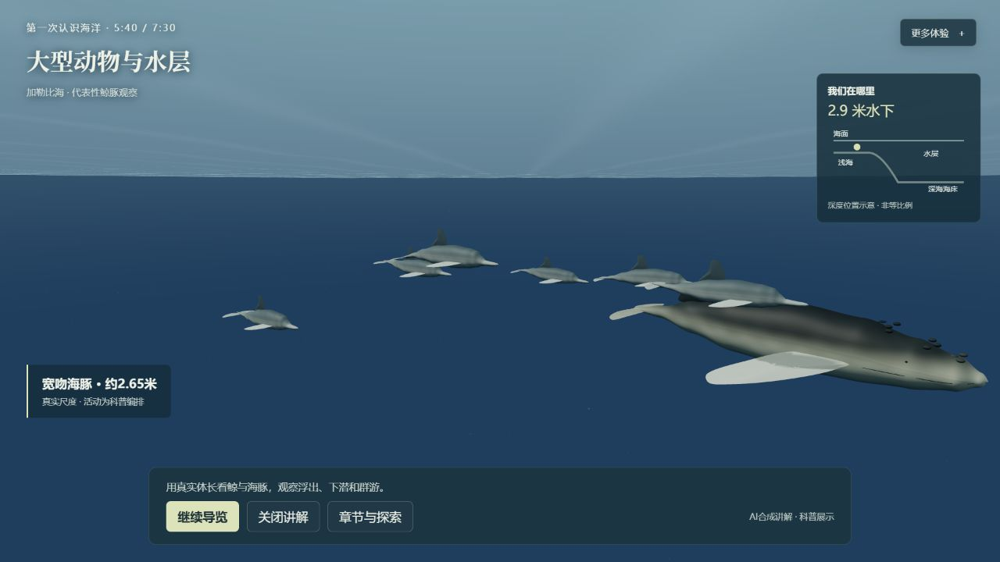
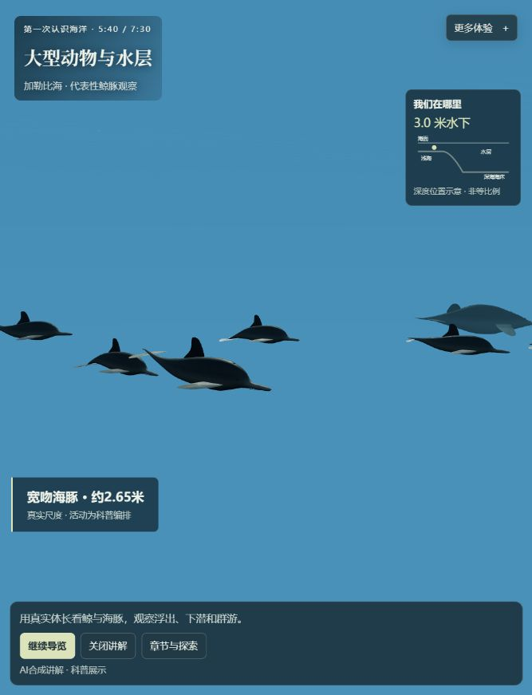
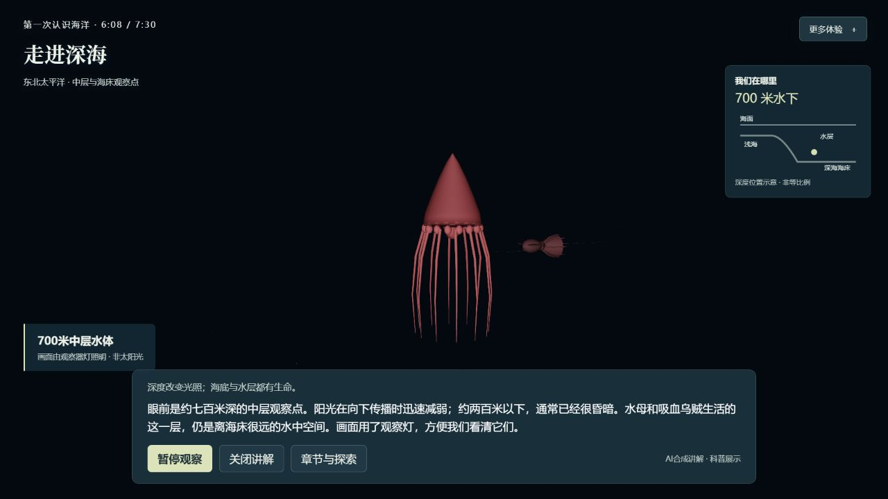
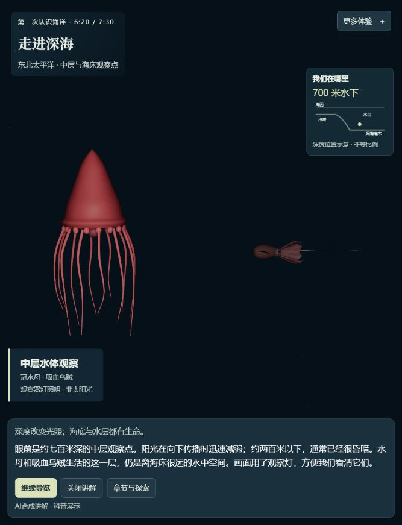
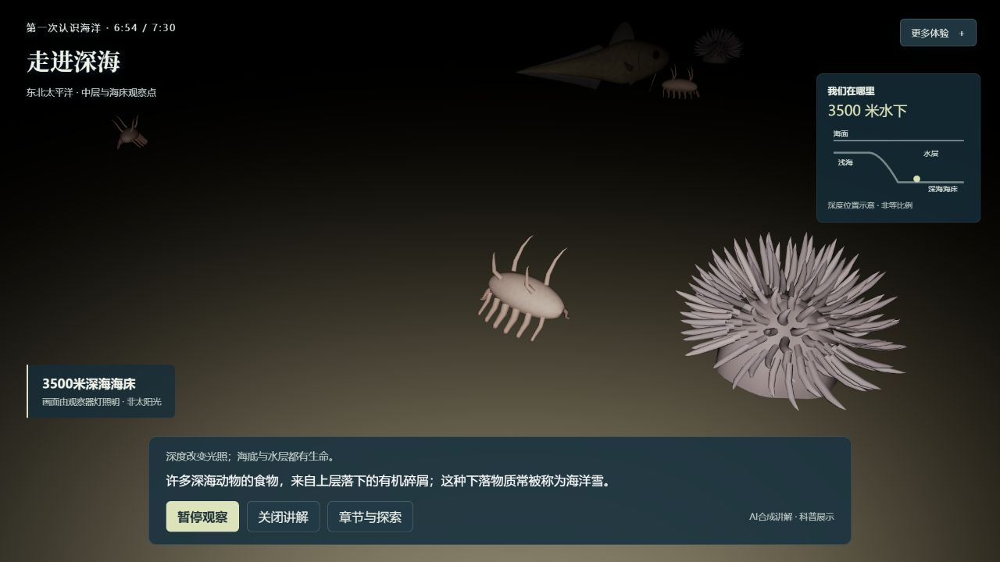
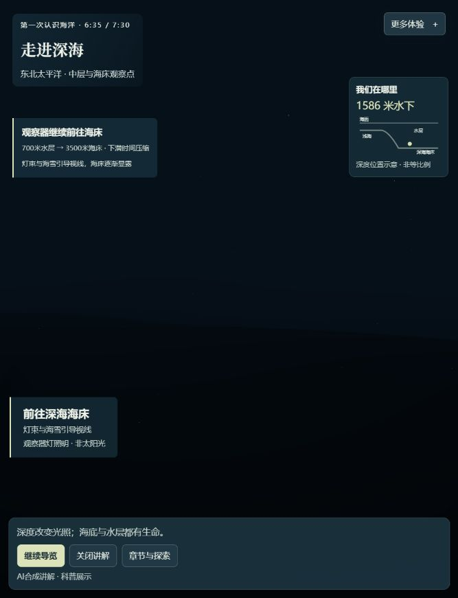

海面与近岸
观察温和涌浪、细波与近岸轮廓。海面和海岸作为一片连续场景组织，仍是简化的原创地形。



STAGE 07 · 2026-10-14 · 本地未部署
海面与海岸、鲸豚运动、完整深海群落和观察器旅程一起改进。原4分钟浅海保持，继续从海面认识水层、生境和海床。
同一13.8米座头鲸的317秒水下全身观察。身体朝向、尾部和路径联动；动作仍是有参考的有限科普编排。
这是最终完整轮之后的独立暂停观察，保留当时窄窗口原图。

同章节整体对照，镜头时点不同。左侧为阶段06原图，右侧为本轮原始截图；相机和窗口也可能不同。对照用于查看整体变化，不能作为同机位或严格逐像素A/B。图片完整显示，点击可看原图。
观察温和涌浪、细波与近岸轮廓。海面和海岸作为一片连续场景组织，仍是简化的原创地形。

原240秒礁谷、沙道、草床路线与原群落保持。这组对照用于核实旧体验仍在；截图不同不表示本轮重新制作浅海。


以完整身体、推进与转向一起表达游动，再观察海面换气和下潜。保持约13.8米的米制展示尺度；这不是野外行为测量。


整群的方向、身体转向与尾部推进协调。保持6只、每只约2.65米的展示配置；数量不表示截图中的可见个体数，也不以增加动物数量当作自然感改善。


冠水母与吸血乌贼按原分类和尺寸整组重建，结合完整附肢、柔软姿态和观察器照明。冠水母帽体和部分材质仍简化。


软泥底、稀疏岩缘和近底游层连在一起，接触阴影辅助看清贴底关系。五核心形态整组升级，再复用三类功能代表；深海章节配置由18减至15个代表，不表示屏内实数。画面仍有程序模型感。


观察器旅程
同一观察器的视线、灯雪和深度提示衔接中层与海床。700米至3500米采用下潜快进示意，保留画面推进；不同海域仍明确切换，不能理解为同一地点的实测连续潜航。

以下数值只读取本页阶段07回执。未完成或未记录的项目显示“待填写”，不沿用旧数字，也不把候选预览当作完整播放。
| 记录 | 本轮结果 | 含义与范围 |
|---|---|---|
| 完整播放 | 待填写 | 模型终点与实际经过时间分别记录；是否无操作中断以原始回执为准。 |
| 加载 | 待填写 | 导航到准备完成的时间。单台本地记录不代表受控冷启动或公网表现。 |
| 帧间隔 | 待填写 | p95为记录方式给出的上界；同时公开最大值和超过250毫秒的帧数。 |
| 讲解播放 | 待填写 | 媒体播放记录不等于人耳试听或首次观众理解验收。 |
| 相关检查 | 待填写 | 本轮定向检查的通过计数，不冒称全世界长测或全部设备验收。 |
总览展示与旧浅海、巨藻林、深海持久生态分离，不读取或改写原生态存档。下方只呈现本轮回执中的保护结果。
待填写
动物和海岸仍有程序模型感，冠水母帽体与鼠尾鱼材质尤其简化。海岸不是实测重建，运动与展示数量没有野外校准，海雪与痕迹不代表真实摄食或碳通量。原研究世界的等待、低帧率和存档问题没有在本轮修复。